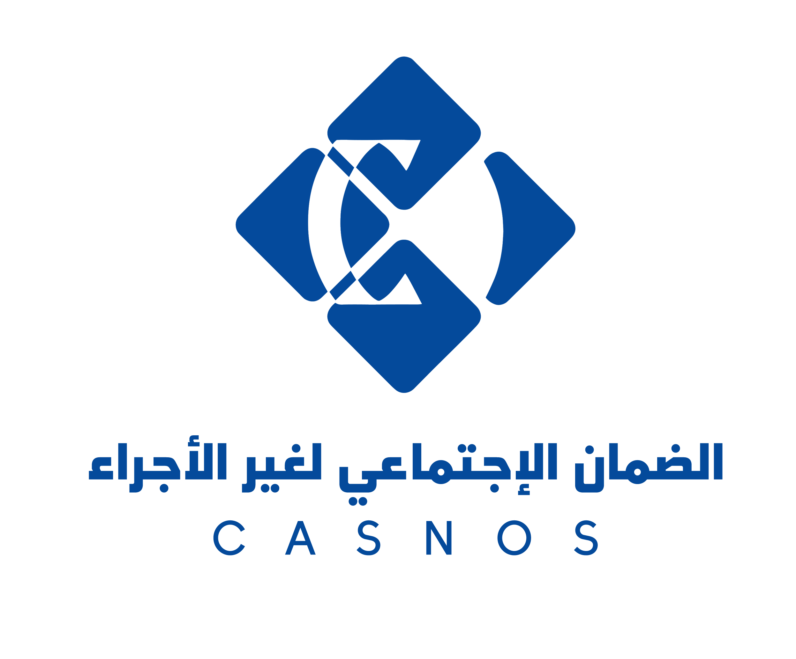
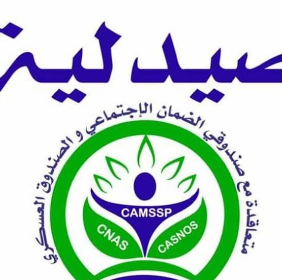

-Logo of The National Social Insurance Fund for Salaried Workers
CNAS (the Caisse Nationale des Assurances Sociales des Travailleurs Salariés) is Algeria’s public social security fund dedicated to protecting salaried employees.
Operating under the supervision of the Ministry of Labour, Employment and Social Security, it manages a comprehensive benefits program that covers health insurance, maternity leave, workplace accidents, occupational diseases, and disability benefits.
Financed by mandatory employer and employee contributions—typically totaling 34.5% of the gross monthly salary.CNAS ensures that workers are compensated for lost income during sick leave and provides essential medical care funding.
A key pillar of its modern system is the digital CHIFA card, which allows insured citizens to benefit from a third-party payment system to acquire subsidized prescription medications directly at local pharmacies without upfront costs.
CASNOS:

-Logo of The National Social Security Fund for Non-Salaried Workers
CASNOS (Caisse Nationale de Sécurité Sociale des Non-Salariés) is the national social security fund in Algeria specifically designed for self-employed workers, independent professionals, traders, artisans, and farmers.
It operates as a mandatory social protection system that mirrors the CNAS system used for salaried employees.
The institution is responsible for collecting annual financial contributions from its members and managing their social coverage.
Through this system, registered non-salaried workers gain vital access to healthcare reimbursements, maternity benefits, disability allowances, and retirement pensions, ensuring long-term social and financial stability for independent workers across the country.
CAMSSP:

-Logo of The Military Social Security and Pension/Provident Fund
CAMSSP stands for the Caisse Militaire de Sécurité Sociale et de Prévoyance (Military Social Security and Pension/Provident Fund) in Algeria.
It is the dedicated public institution responsible for managing the healthcare coverage, social security benefits, and retirement pensions for members of the Algerian People's National Army (ANP),
military personnel, and their eligible dependents (ayants droit). Working under the umbrella of the social protection framework alongside civilian funds like CNAS (for salaried workers) and CASNOS (for non-salaried workers), CAMSSP establishes conventions with public and private hospitals to financially support medical procedures, specialized surgical interventions,
and prescription medications for its affiliates.
Official video guides from the major social security funds in Algeria